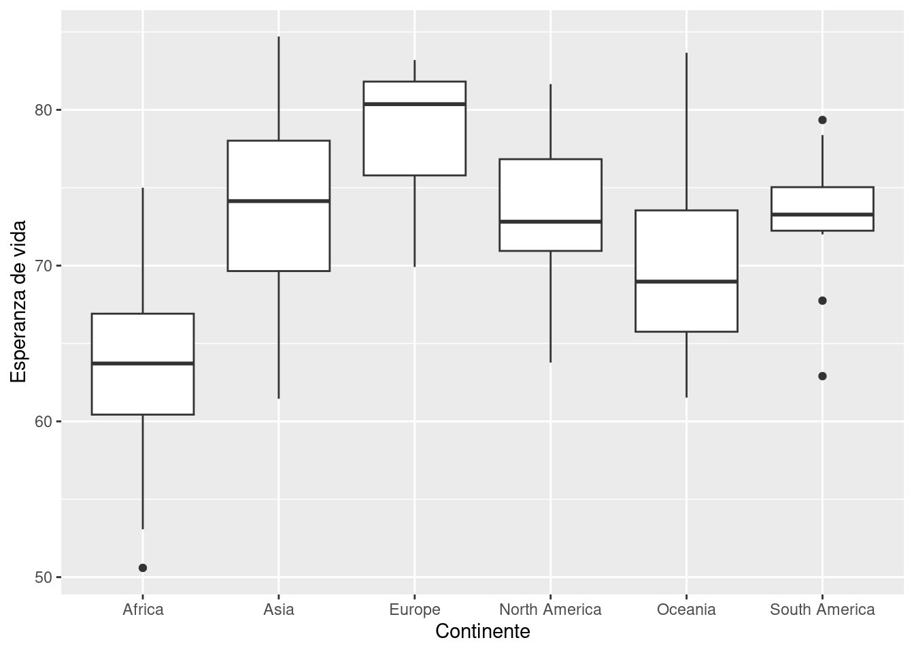
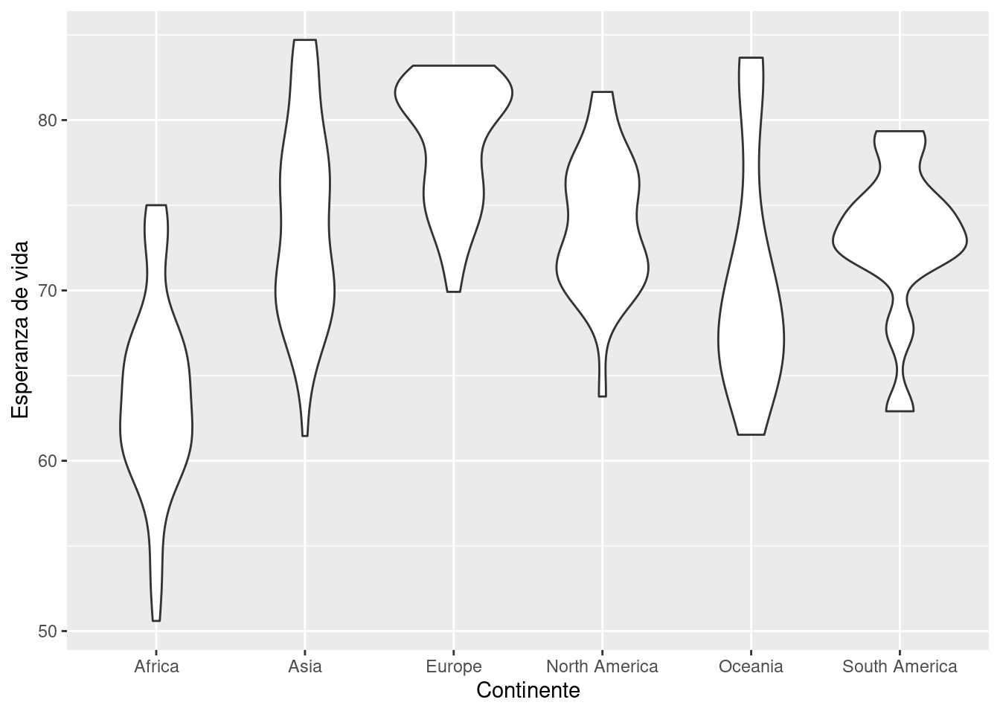
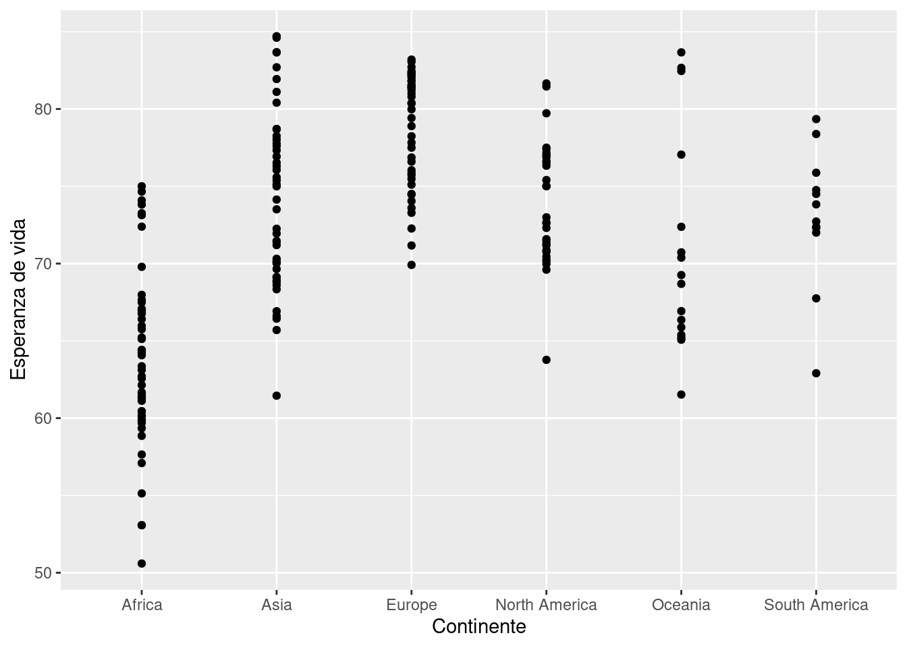
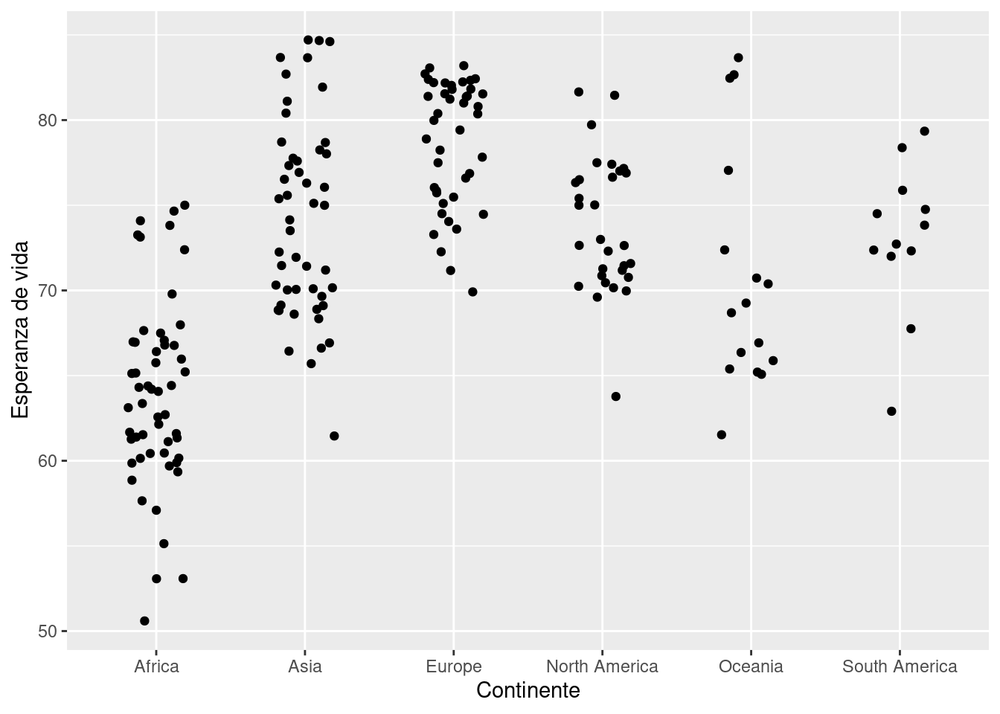
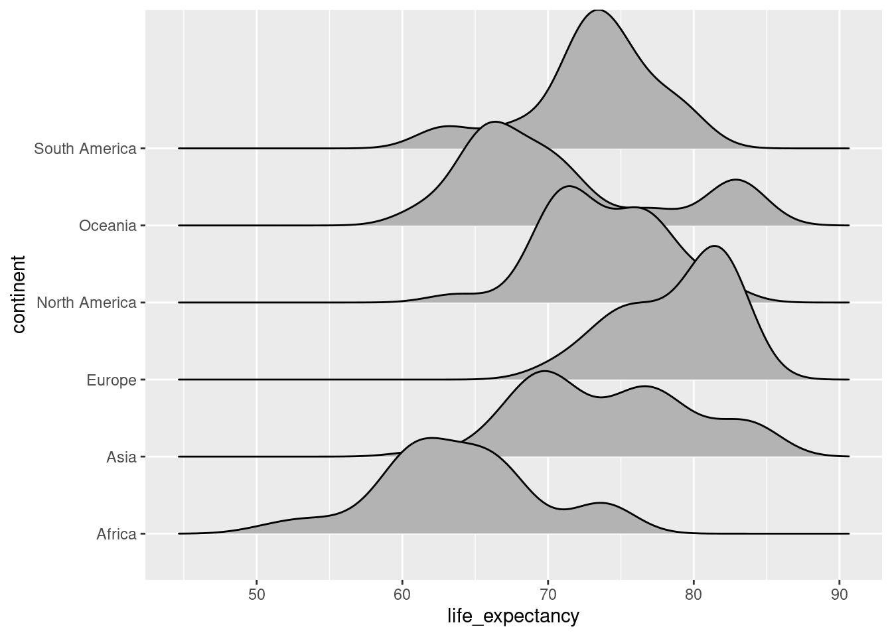
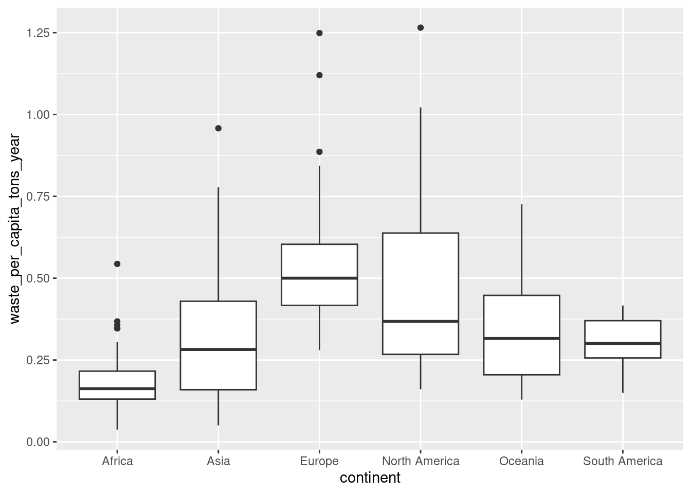
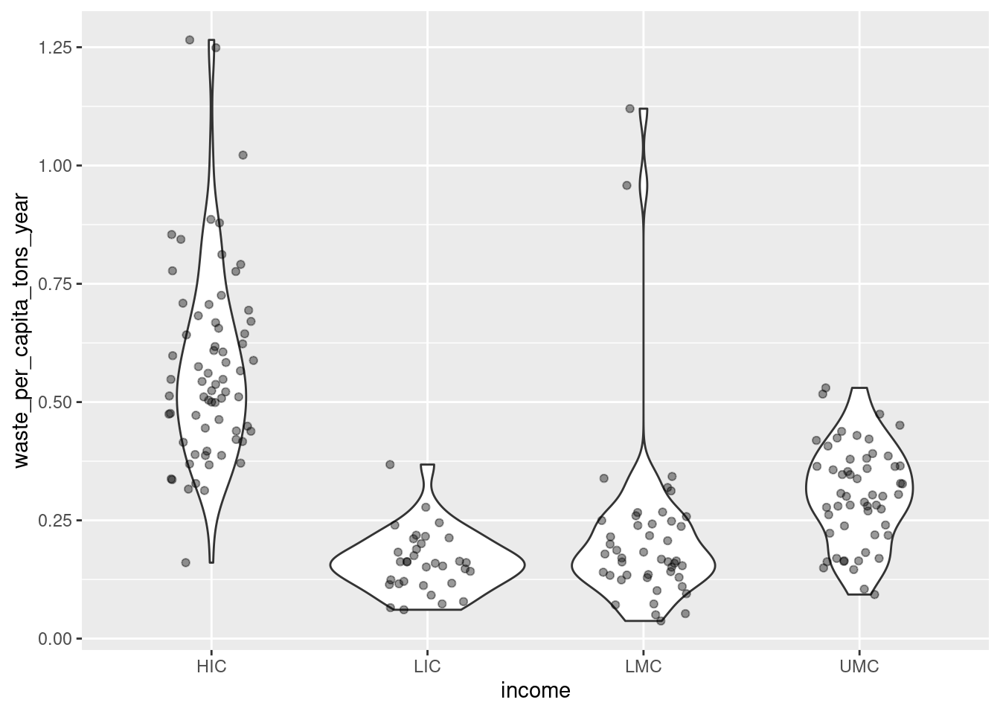
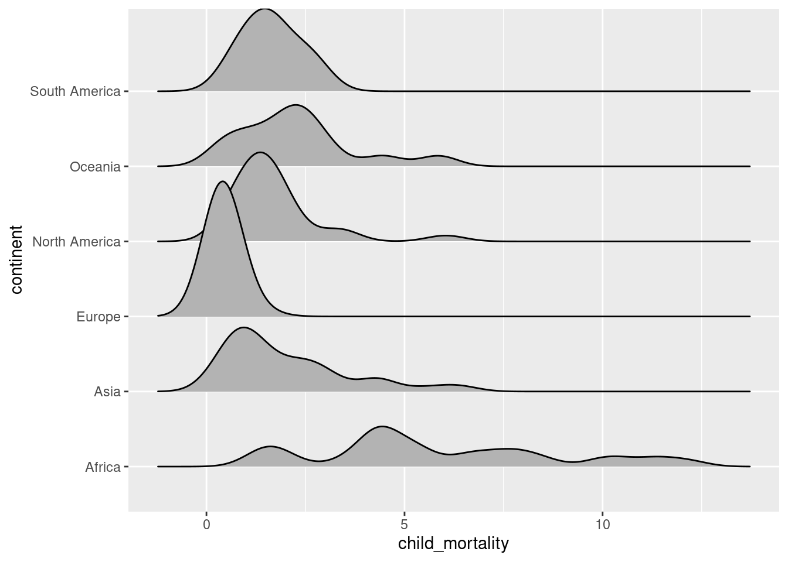

Otras visualizaciones que son muy útiles para comparar la distrubución de una variable separada por otra variable categórica son los gráficos de caja y bigotes, el gráfico de violín, el gráfico de puntos dispersos y el «ridges plot». En este notebook revisamos cómo crear estas visualizaciones con ggplot.
Objetivos
Crear gráficos de cajas y bigotes con ggplot
Crear gráficos de violín con ggplot
Crear gráficos de puntos dispersos con ggplot
Crear «ridges plot» con ggplot y ggridges
Cargar librerías y datos
En este notebook vamos a usar ggplot2 para graficar (que viene con tidyverse) y usaremos los datos con información general de los países que hemos usado en notebooks anteriores.
library(tidyverse)
── Attaching core tidyverse packages ──────────────────────── tidyverse 2.0.0 ──
✔ dplyr 1.1.4 ✔ readr 2.1.5
✔ forcats 1.0.0 ✔ stringr 1.5.1
✔ ggplot2 3.5.2 ✔ tibble 3.3.0
✔ lubridate 1.9.4 ✔ tidyr 1.3.1
✔ purrr 1.1.0
── Conflicts ────────────────────────────────────────── tidyverse_conflicts() ──
✖ dplyr::filter() masks stats::filter()
✖ dplyr::lag() masks stats::lag()
ℹ Use the conflicted package (<http://conflicted.r-lib.org/>) to force all conflicts to become errors
datos <-read_csv("misc_world_data_2020.csv")
Rows: 204 Columns: 11
── Column specification ────────────────────────────────────────────────────────
Delimiter: ","
chr (4): country, code, continent, income
dbl (7): population, annual_co2_emissions_per_capita, waste_per_capita_tons_...
ℹ Use `spec()` to retrieve the full column specification for this data.
ℹ Specify the column types or set `show_col_types = FALSE` to quiet this message.
Los gráficos de cajas y bigotes dividen los datos en cuartiles y nos permiten ver la distribución del valor mínimo, el primer cuartil, la mediana (segundo cuartil), el tercer cuartil, el valor máximo y los datos atípicos. Este tipo de gráficos son muy útiles para comparar la distribución de variables agrupadas por una variable categórica. Para crear gráficos de cajas y bigotes en ggplot usamos la función geom_boxplot(). Por ejemplo, visualicemos la esperanza de vida en distintos continentes:
ggplot(data = datos,mapping =aes(x = continent, y = life_expectancy) ) +geom_boxplot() +labs(x ="Continente",y ="Esperanza de vida" )

Reflexiona
¿Qué patrón observas?
Compara esta visualización con los histogramas y gráficos de densidad que hicimos previamente. ¿Qué diferencias encuentras entre ambos tipos de visualización? ¿Cuál te parece más sencillo de leer e interpretar?
Gráficos de violín
Otro tipo de gráficos que nos permiten ver facilmente la distribución de una variable nuérica separada por categorías es el gráfico de violín. Este es como un gráfico de densidad, pero rotado 90 grados y con la proyección en espejo. Para hacerlos con ggplot podemos usar geom_violin():
ggplot(data = datos,mapping =aes(x = continent, y = life_expectancy)) +geom_violin() +labs(x ="Continente",y ="Esperanza de vida" )

Reflexiona
Compara esta visualización con el gráfico de caja y bigotes que hicimos previamente. ¿Qué diferencias encuentras entre ambos tipos de visualización? ¿Qué distinta información puedes obtener de uno y de otro?
Nota como los gráficos de violín a diferencia de los de caja y bigotes no nos muestran la media ni los datos atípicos, pero nos permiten ver mejor si los datos son bimodales.
Gráfico de puntos
Una desventaja que tienen los gráficos de cajas y bigotes y los de violín es que como algomeran los datos en un solo objeto pueden generar la apariencia de que hay datos donde puede no haberlos. Para evitar este problema podemos graficar cada punto de manera individual:
ggplot(data = datos,mapping =aes(x = continent, y = life_expectancy)) +geom_point() +labs(x ="Continente",y ="Esperanza de vida" )

Un problema que presentan estos gráficos es que puede haber mucho sobrelape de puntos, lo cual evita que podamos ver las regiones más densas. Una solución es darle un poco de ruido aleatorio en el eje de las x para que los puntos no se sobrelapen tanto. A esto se le conoce como jittering (tembloroso) y se puede agregar de manera muy fácil a ggplot usando geom_jitter(). Con el argumento width de geom_jitter() podemos controlar que tanto se dispersan los puntos en el eje x.
ggplot(data = datos,mapping =aes(x = continent, y = life_expectancy)) +geom_jitter(width = .2) +labs(x ="Continente",y ="Esperanza de vida" )

Combinar gráficos
Los gráficos de puntos nos permiten ver cómo se distribuyen nuestros puntos realmente, sin embargo, a diferencia del gráfico de violín es más difícil identificar patrones generales. Para tener mayor información sobre los datos muchas veces se combinan los gráficos. Podemos agregar los dos gráficos como distintas capas. Nota como el orden en que agregamos las capas importa, las capas que pongamos primero en nuestro código irán más abajo. Por ejemplo, si queremos que los gráficos de violín estén abajo debemos ponerlas primero. En este gráfico además para que los puntos no sobresalgan mucho podemos darles opacidad con el argumento alpha.
Finalmente, otro gráfico que nos permite ver la distribución de variables numéricas agrupadas por una variable categórica, es el un «ridges plot». Este es un gráfico que apila ligeramente gráficos de densidad de grupos distintos (este gráfico se parece a la portada de un famoso disco de Joy Division.
ggplot no tiene por defecto una geometría para crear este tipo de gráfico, pero podemos instalar y cargar el paquete ggridges, el cual introduce la función geom_density_ridges() que nos permite construir este gráfico de manera muy simple.
# install.packages("ggridges")library(ggridges)ggplot(datos, aes(y = continent, x = life_expectancy)) +geom_density_ridges()
Picking joint bandwidth of 1.98

Ejercicios
Crea un gráfico de cajas y bigotes para comparar como se distribuye la producción de basura per cápita en cada continente.
datos |>ggplot(aes(x = continent, y = waste_per_capita_tons_year)) +geom_boxplot()
Warning: Removed 2 rows containing non-finite outside the scale range
(`stat_boxplot()`).

Crea un gráfico de violín con los puntos sobrelapados, que muestre como la producción de basura per cápita se distribuye en cada nivel de ingresos del banco mundial:
datos |>ggplot(aes(x = income, y = waste_per_capita_tons_year)) +geom_violin() +geom_jitter(alpha =0.4, width =0.2)
Warning: Removed 2 rows containing non-finite outside the scale range
(`stat_ydensity()`).
Warning: Removed 2 rows containing missing values or values outside the scale range
(`geom_point()`).

Crea un gráfico de crestas (ridges plot) que muestre cómo la mortalidad infantil se distribuye por continente.
datos |>ggplot(aes(x = child_mortality, y = continent)) +geom_density_ridges()
Picking joint bandwidth of 0.485
Warning: Removed 12 rows containing non-finite outside the scale range
(`stat_density_ridges()`).

Ejecutar el código
---title: "16 - Gráficos de cajas, violín, puntos y ridges"output: html_documenteditor_options: chunk_output_type: console---## IntroducciónOtras visualizaciones que son muy útiles para comparar la distrubución de una variable separada por otra variable categórica son los gráficos de caja y bigotes, el gráfico de violín, el gráfico de puntos dispersos y el «ridges plot». En este notebook revisamos cómo crear estas visualizaciones con ggplot.**Objetivos**- Crear gráficos de cajas y bigotes con ggplot- Crear gráficos de violín con ggplot- Crear gráficos de puntos dispersos con ggplot- Crear «ridges plot» con ggplot y ggridges## Cargar librerías y datosEn este notebook vamos a usar `ggplot2` para graficar (que viene con `tidyverse`) y usaremos los datos con información general de los países que hemos usado en notebooks anteriores.```{r}library(tidyverse)datos <-read_csv("misc_world_data_2020.csv")glimpse(datos)```## Gráfico de cajas y bigotesLos gráficos de cajas y bigotes dividen los datos en *cuartiles* y nos permiten ver la distribución del valor mínimo, el primer cuartil, la mediana (segundo cuartil), el tercer cuartil, el valor máximo y los datos atípicos. Este tipo de gráficos son muy útiles para comparar la distribución de variables agrupadas por una variable categórica. Para crear gráficos de cajas y bigotes en ggplot usamos la función `geom_boxplot()`. Por ejemplo, visualicemos la esperanza de vida en distintos continentes:```{r}ggplot(data = datos,mapping =aes(x = continent, y = life_expectancy) ) +geom_boxplot() +labs(x ="Continente",y ="Esperanza de vida" )```**Reflexiona**- ¿Qué patrón observas?- Compara esta visualización con los histogramas y gráficos de densidad que hicimos previamente. ¿Qué diferencias encuentras entre ambos tipos de visualización? ¿Cuál te parece más sencillo de leer e interpretar?## Gráficos de violínOtro tipo de gráficos que nos permiten ver facilmente la distribución de una variable nuérica separada por categorías es el gráfico de violín. Este es como un gráfico de densidad, pero rotado 90 grados y con la proyección en espejo. Para hacerlos con ggplot podemos usar `geom_violin()`:```{r}ggplot(data = datos,mapping =aes(x = continent, y = life_expectancy)) +geom_violin() +labs(x ="Continente",y ="Esperanza de vida" )```**Reflexiona**- Compara esta visualización con el gráfico de caja y bigotes que hicimos previamente. ¿Qué diferencias encuentras entre ambos tipos de visualización? ¿Qué distinta información puedes obtener de uno y de otro?Nota como los gráficos de violín a diferencia de los de caja y bigotes no nos muestran la media ni los datos atípicos, pero nos permiten ver mejor si los datos son bimodales.## Gráfico de puntosUna desventaja que tienen los gráficos de cajas y bigotes y los de violín es que como algomeran los datos en un solo objeto pueden generar la apariencia de que hay datos donde puede no haberlos. Para evitar este problema podemos graficar cada punto de manera individual:```{r}ggplot(data = datos,mapping =aes(x = continent, y = life_expectancy)) +geom_point() +labs(x ="Continente",y ="Esperanza de vida" )```Un problema que presentan estos gráficos es que puede haber mucho sobrelape de puntos, lo cual evita que podamos ver las regiones más densas. Una solución es darle un poco de ruido aleatorio en el eje de las x para que los puntos no se sobrelapen tanto. A esto se le conoce como *jittering* (tembloroso) y se puede agregar de manera muy fácil a ggplot usando `geom_jitter()`. Con el argumento `width` de `geom_jitter()` podemos controlar que tanto se dispersan los puntos en el eje x.```{r}ggplot(data = datos,mapping =aes(x = continent, y = life_expectancy)) +geom_jitter(width = .2) +labs(x ="Continente",y ="Esperanza de vida" )```## Combinar gráficosLos gráficos de puntos nos permiten ver cómo se distribuyen nuestros puntos realmente, sin embargo, a diferencia del gráfico de violín es más difícil identificar patrones generales. Para tener mayor información sobre los datos muchas veces se combinan los gráficos. Podemos agregar los dos gráficos como distintas capas. Nota como **el orden en que agregamos las capas importa**, las capas que pongamos primero en nuestro código irán más abajo. Por ejemplo, si queremos que los gráficos de violín estén abajo debemos ponerlas primero. En este gráfico además para que los puntos no sobresalgan mucho podemos darles opacidad con el argumento `alpha`.```{r}ggplot(data = datos,mapping =aes(x = continent, y = life_expectancy)) +geom_violin() +geom_jitter(width = .2, alpha =0.3) +labs(x ="Continente",y ="Esperanza de vida" )```## Ridges plotFinalmente, otro gráfico que nos permite ver la distribución de variables numéricas agrupadas por una variable categórica, es el un «ridges plot». Este es un gráfico que apila ligeramente gráficos de densidad de grupos distintos (este gráfico se parece a [la portada de un famoso disco de Joy Division](https://en.wikipedia.org/wiki/Unknown_Pleasures). `ggplot` no tiene por defecto una geometría para crear este tipo de gráfico, pero podemos instalar y cargar el paquete `ggridges`, el cual introduce la función `geom_density_ridges()` que nos permite construir este gráfico de manera muy simple.```{r}# install.packages("ggridges")library(ggridges)ggplot(datos, aes(y = continent, x = life_expectancy)) +geom_density_ridges()```## Ejercicios1. Crea un gráfico de cajas y bigotes para comparar como se distribuye la producción de basura per cápita en cada continente. ```{r}datos |>ggplot(aes(x = continent, y = waste_per_capita_tons_year)) +geom_boxplot()```2. Crea un gráfico de violín con los puntos sobrelapados, que muestre como la producción de basura per cápita se distribuye en cada nivel de ingresos del banco mundial:```{r}datos |>ggplot(aes(x = income, y = waste_per_capita_tons_year)) +geom_violin() +geom_jitter(alpha =0.4, width =0.2)```3. Crea un gráfico de crestas (ridges plot) que muestre cómo la mortalidad infantil se distribuye por continente.```{r}datos |>ggplot(aes(x = child_mortality, y = continent)) +geom_density_ridges()```